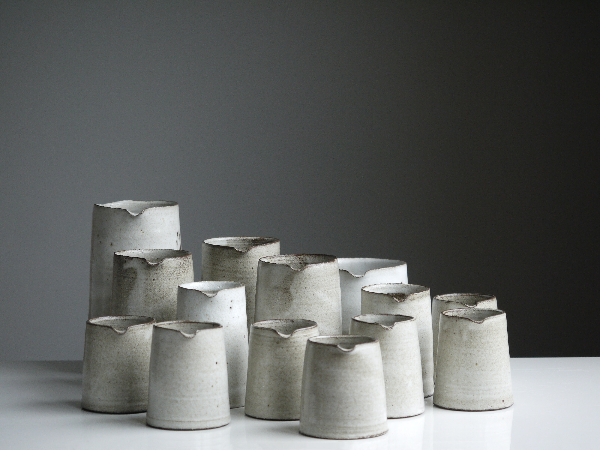
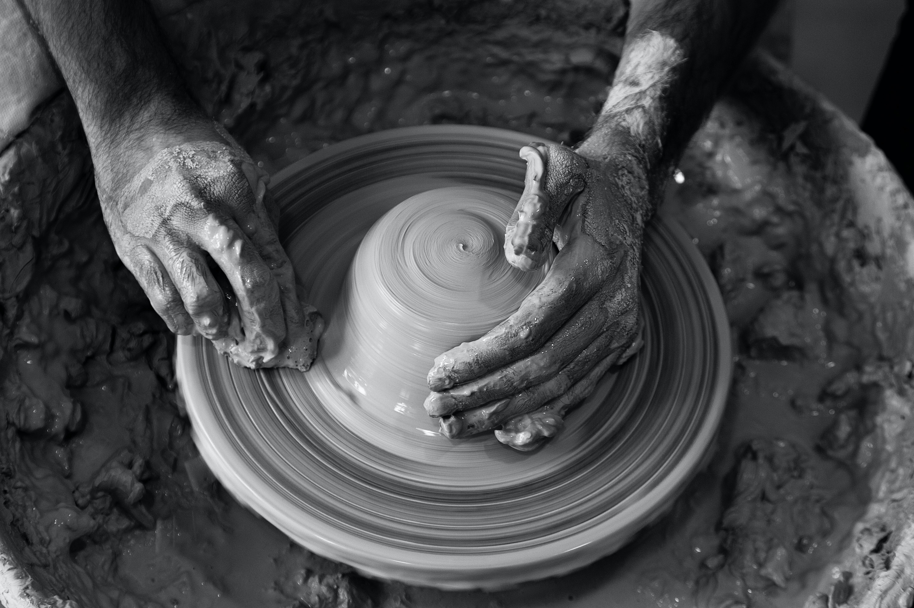
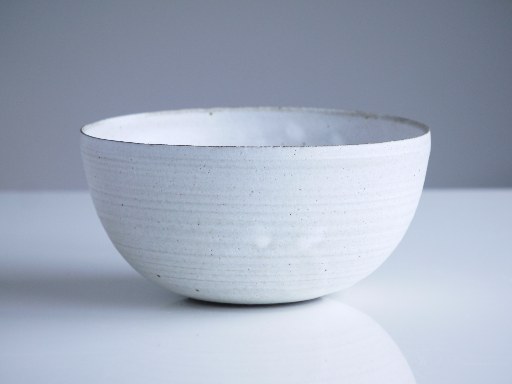
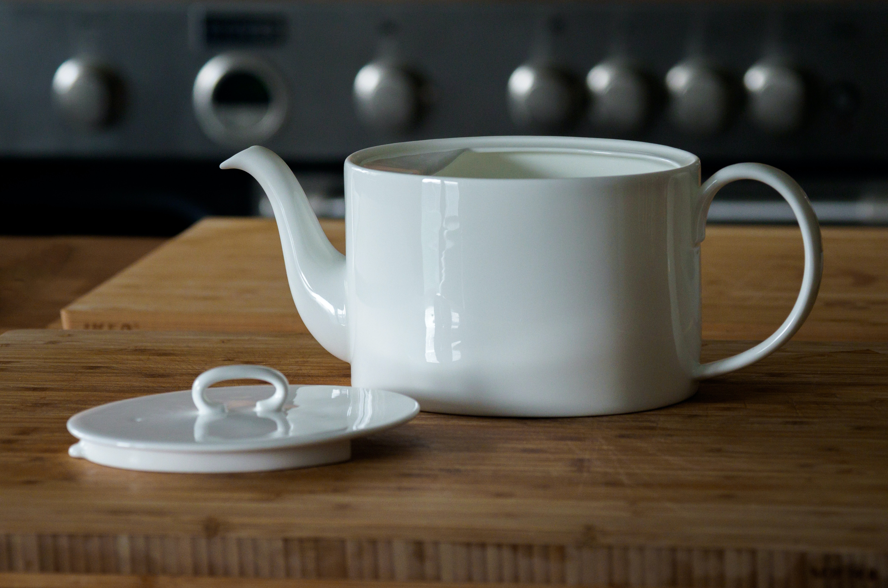
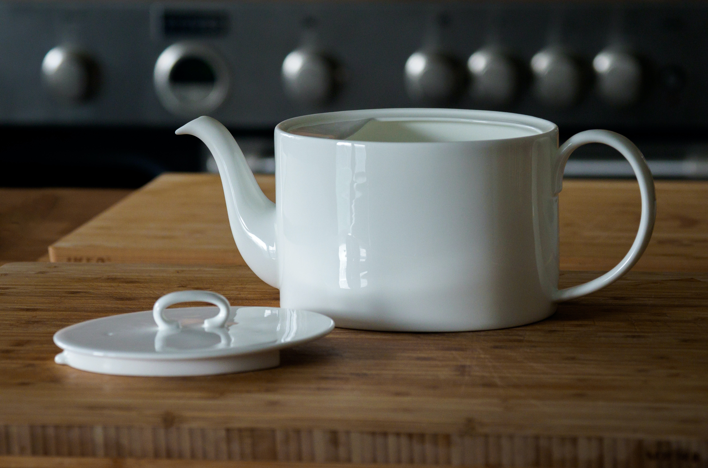
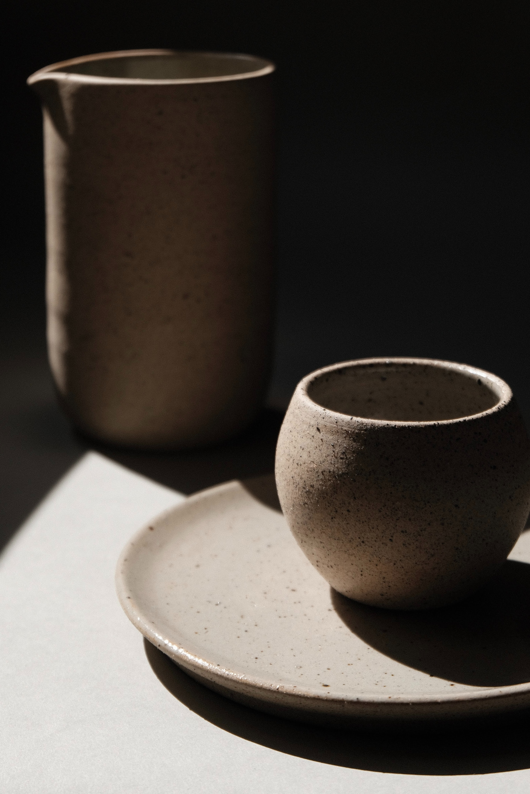
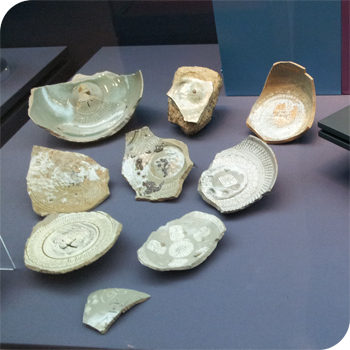

요즘은 세라믹이라는 신소재로 다시 각광받고 있다. 재료는 다르지만 제작 방식은 도자기와 닮았다. 정확히는 도기와 자기의 합성어인데, 도자기라 하면 보통 고운 태토(흙)를 써서 만들고 유약을 발라 구워 매끈하게 만든 자기를 떠올리게 된다. 도기에는 넓게는 유약을 칠하지 않은 토기나 연유나 회유 를 써서 만든 시유도기까지 들어가므로 꽤 넓은 의미 범위를 아우르는 단어가 된다.
도자기를 굽는 사람은 도공 혹은 도예가라고 한다. 도자기를 이용한 예술은 도예라고 한다. 도자 공예의 줄임말.
예로부터 쓰인 재질로 여전히 잔, 접시, 화분 등을 만들 때 많이 쓴다. 인체에 무해하고 방수성을 가지면서 높은 경도를 지니고 있고 만들 때 모양 내기가 쉬워서 그렇다. 다만 취성 재료인 데다 충격에 약해 잘 깨진다는 약점이 있다. 그러나 이것도 제품마다 달라 어느 정도 높이에서 떨어져도 금도 안 가는 제품도 있다.
한때 중국이 서양 등을 상대로 거래한 주요 물품. 실크로드나 배를 통해 자주 운송되었다. 그래서 영어로 도자기를 ceramic라고 한다. 유럽에서는 이게 귀해, 연금술사가 도자기를 만드는 방법을 알고 있다는 말에 왕이 그 자리에서 스카웃했다는 이야기도 있다. 중국의 백자를 수입하지 않고 자체 생산하려는 노력 끝에 유럽에서는 동물의 뼛가루를 이용해 하얀 색을 극대화한 본 차이나(Bone china)가 나왔다. 중국이나 한국의 백자가 일반적으로 백자 하면 떠오르는 푸르스름한 빛깔이 감도는 창백한 백색을 띤 데 반해 본차이나는 특유의 우유빛 같은 따뜻하고 부드러운 질감이 특징이다. 기원이 기원이니만큼, 골동품은 메이드 인 차이나를 최고로 치지만 현대에 생산된 것들은 유럽제를 더 높이 친다. 도자기의 본고장인 중국에선 송나라 때 고려청자를 최고로 치며 비싼 값에 사와 모셔두었다는 기록도 다수 존재한다.
 

800~1,000℃에서 구운 것을 '도기', 1,100~1,400℃에서 구운 것을 '자기'라고 하고, 합쳐서 도자기라고 한다. 그리고 1,000℃ 내외에서 자기가 되는 온도에 도달하지 못한 발전 중간형 그릇을 석기라고 한다. 유약을 바르지 않은 것, 800도 이하 낮은 온도에서 구운 것, 특히 굽지 않은 것까지 포함해서 토기라고 한다.
실수로 깨뜨렸을 경우 파편이 상당히 날카로운지라, 과거에는 연싸움을 할 때 연줄에 사금파리(도자기의 깨진 조각)를 갈아 만든 가루를 풀 먹여 입히기도 했다. 과거 조선시대에 행한 압슬이라는 고문은 바닥에 사금파리를 깔고, 무릎을 끓린 후에 무거운 돌을 얹거나 사람이 올라가 압박을 가해 고통을 주는 고문이었다. 일상속에서 도자기는 유리에 비하면 파편이 적게 나오고 투명하지 않기 때문에, 깨진 유리보다는 상대적으로 안전하다.
물질의 특성상 별다른 조치 없이도 매우 오래 보존될 수 있다. 인류가 멸종된 뒤에도 가장 오랫동안 남을 문명의 산물로 평가된다. 1만 년 전 신석기 시대의 토기가 발굴되는 것이 그 예 이다.